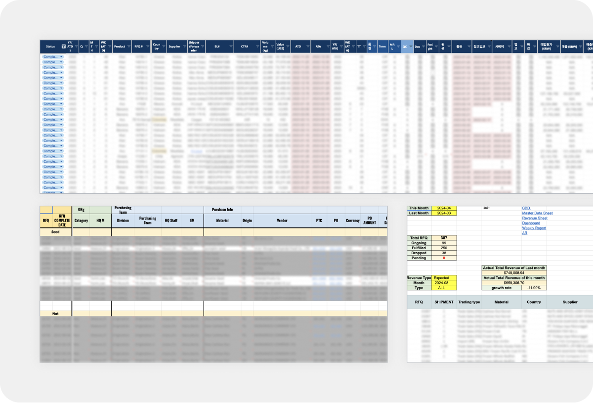
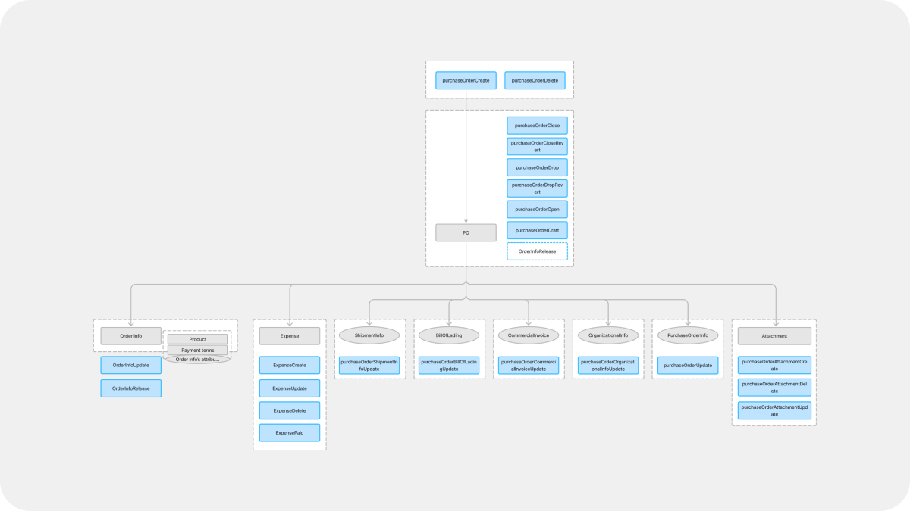
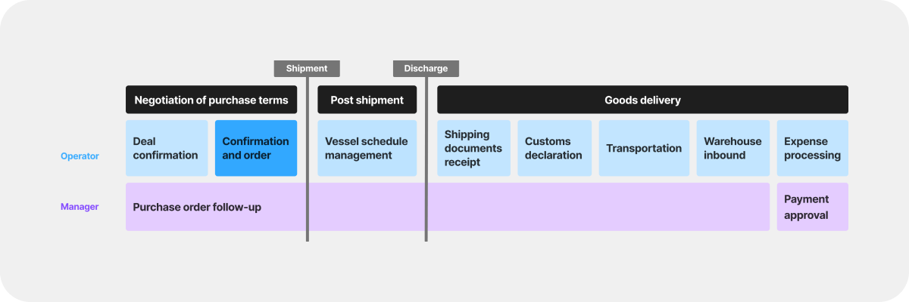
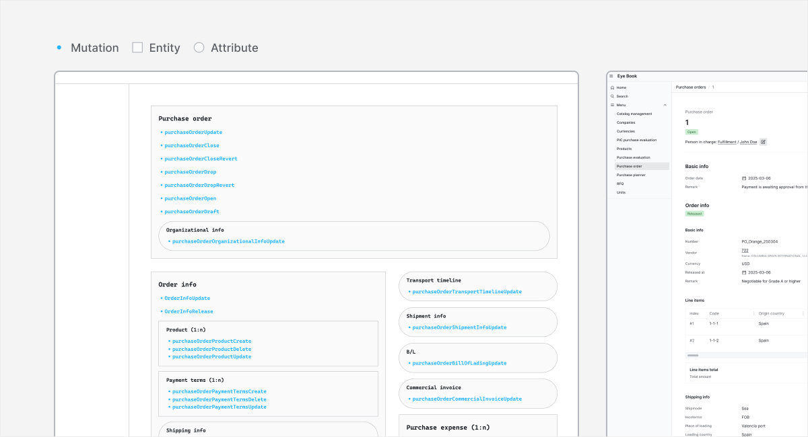
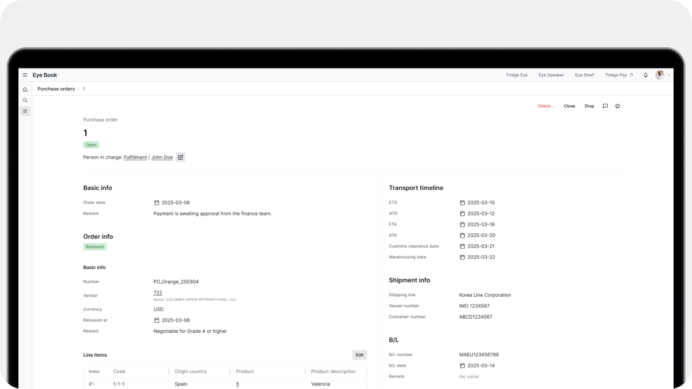
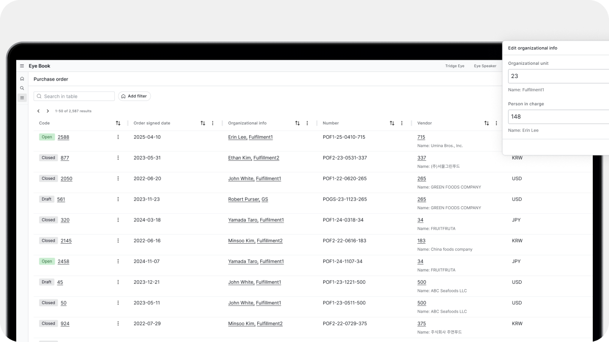
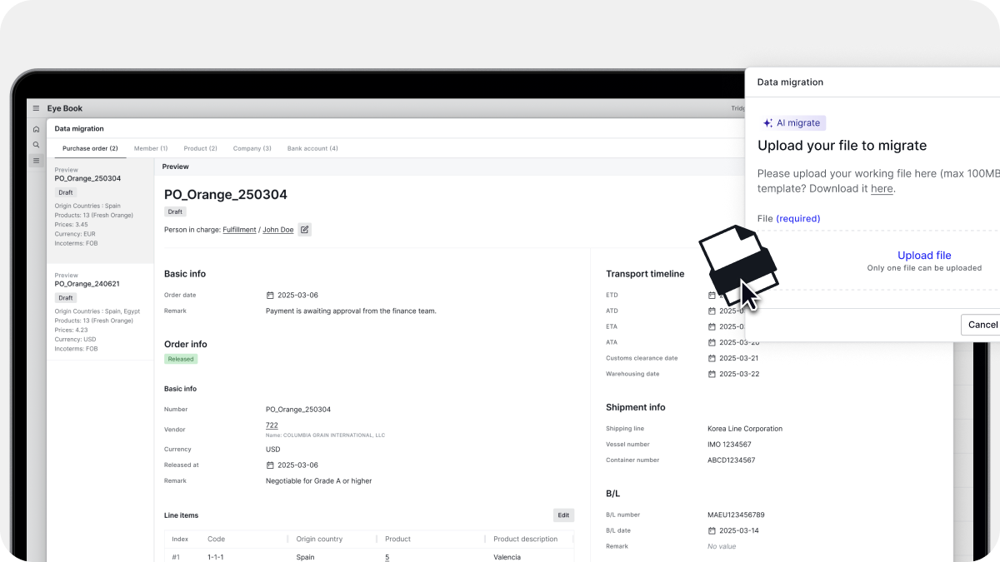

Tridge
Purchase Order Management
One standard for purchase orders
Purchase orders are the backbone of trade operations, but teams kept them in their own spreadsheets with different formats. The goal was one standard for purchase orders, with shared fields and automated steps that teams could rely on.
I designed the interface on top of the data model, guided by user interviews and observation.

Problem
Information was listed without hierarchy, hiding the context of each purchase stage. Each team kept its own file version, so data didn't match and operators struggled to track order status in real time.
Process
The product team set the core data from user observation. Engineers then built the ERD.
Solution
Every action on a purchase order is grouped by the part of the workflow it belongs to, from order info and expenses to shipment, B/L and invoice.

Data model
Designing from the data model
Accuracy mattered here. In a work tool, even a small mismatch with how operators think about their work can cause real delays. Our design lead turned the engineers' ERD into a concept diagram for the interface. I reorganised it by workflow and attached each mutation where an interaction belongs.

User research
How trade teams manage purchase orders
The data model defined what an order needed to contain. It did not show how people actually worked through it. So I asked operators questions as they worked, held short interviews, recorded their screens and went through their work files. They kept going back to the details agreed at the confirmation and order stage. They jumped between files or opened the same file twice in split windows.

Wireframe
From data model to screen
Each entity became a section and each mutation became an action inside it. I placed every action where operators need it in their workflow. Every button on the page matches a real change in the data.

Detail page
Placing core order details side by side
Operators kept going back to the original purchase order while handling later steps. So I kept it on the left as the master, with post-order details beside it. Users can check the order and enter new data without switching screens.

List page
One table for every trade
Operators kept updating details such as negotiation terms, vessel schedules and invoices throughout each trade. I designed an editable, spreadsheet-like table where each cell opens an edit modal that fits its data type. Managers see every trade on one screen.

AI data migration
Historical data in one upload
Users upload the file they already work in and AI turns it into system records such as purchase orders, products and companies. No technical help is needed. Since this is core trade data, I designed every record to arrive as an editable draft that users check and fix before it is saved.
Usability testing
Pilot test before full rollout
I ran a scenario-based pilot test with two fulfilment team members who manage purchase operations. Both completed a purchase order on their first try, in about five minutes on average. Neither had to search for where to enter data. Once the tool is in daily use, I would track error rate, task time and how often users switch panels.